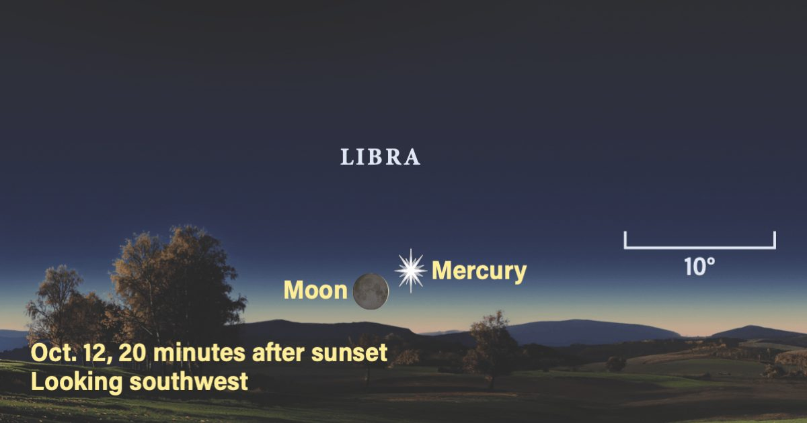

The Sky Today в понедельник, 12 октября: Меркурий в наибольшем удлинении
Ищете мероприятие Sky на этой неделе?
Ознакомьтесь с нашей полной рубрикой «Небо на этой неделе».
11 октября: Марс встречает улей Меркурий достигает своего наибольшего восточного удлинения от Солнца в 6 УТРА по восточному поясному времени сегодня, стоя под углом 25° от нашей звезды.
Затем Луна проходит под углом 2° к югу от Меркурия в 16:00 по восточному поясному времени.
Оба сейчас находятся в Весах.
Продолжить чтение «The Sky Today on Monday, October 12: Mercury at greatest elongation» The post The Sky Today on Monday, October 12: Mercury at greate